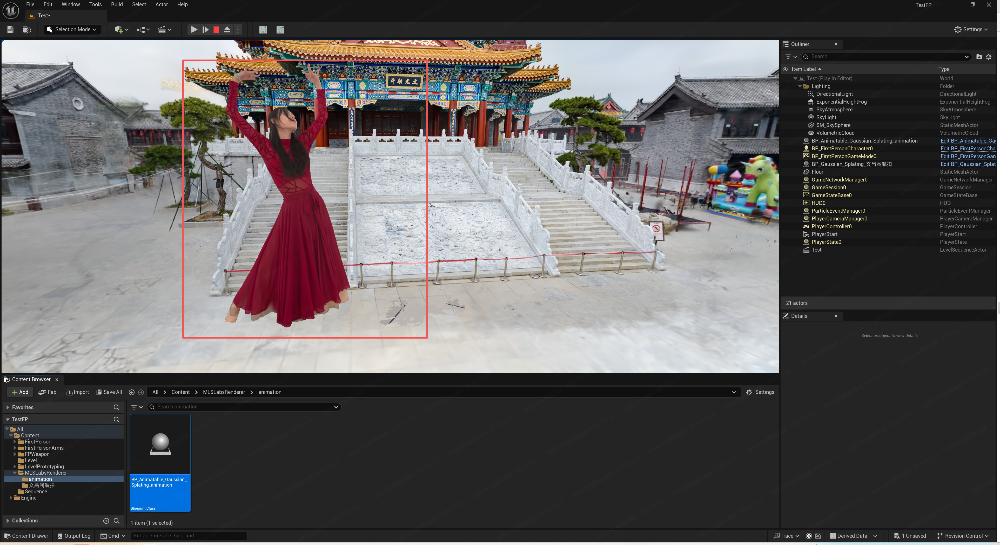
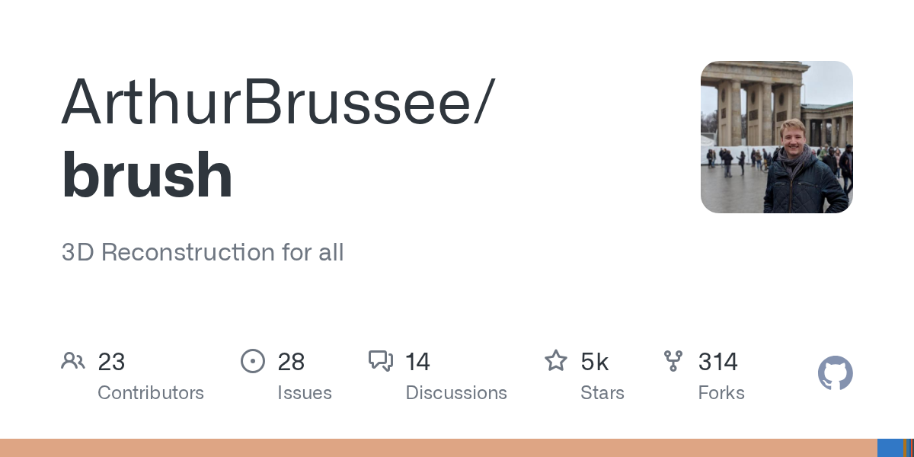
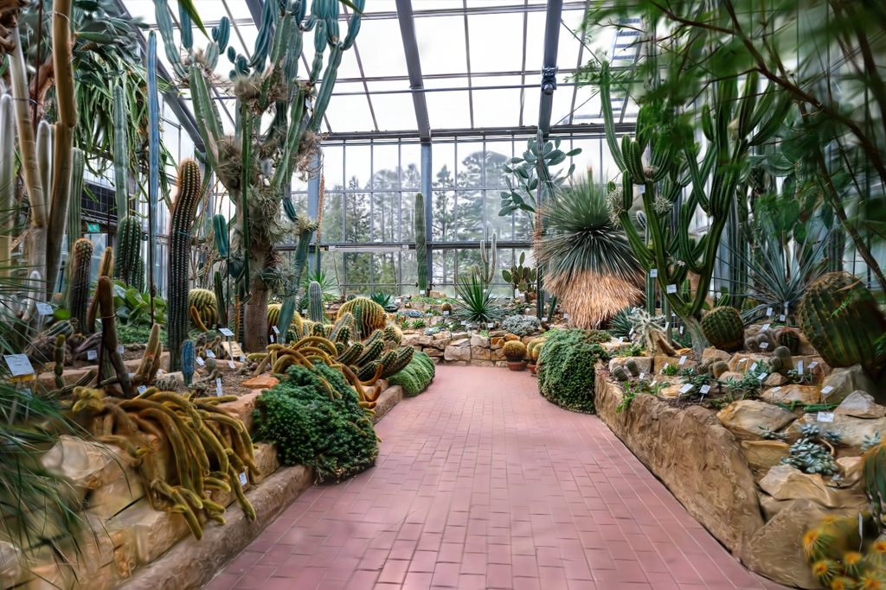
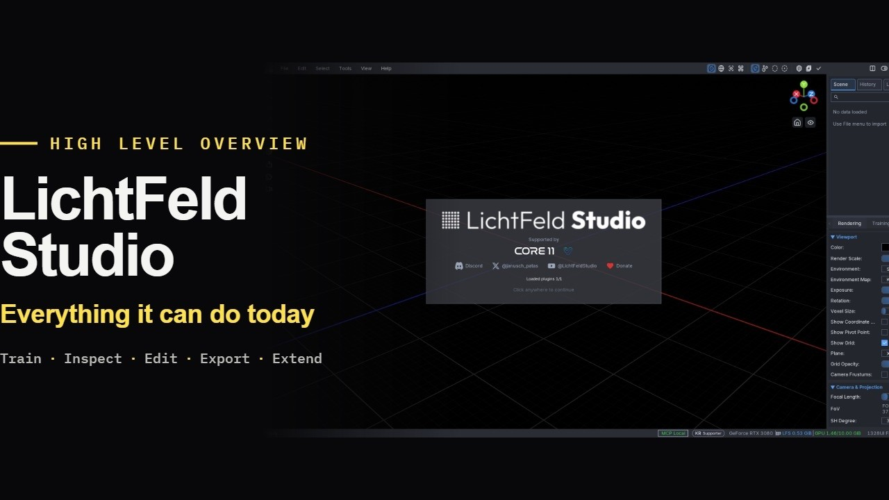
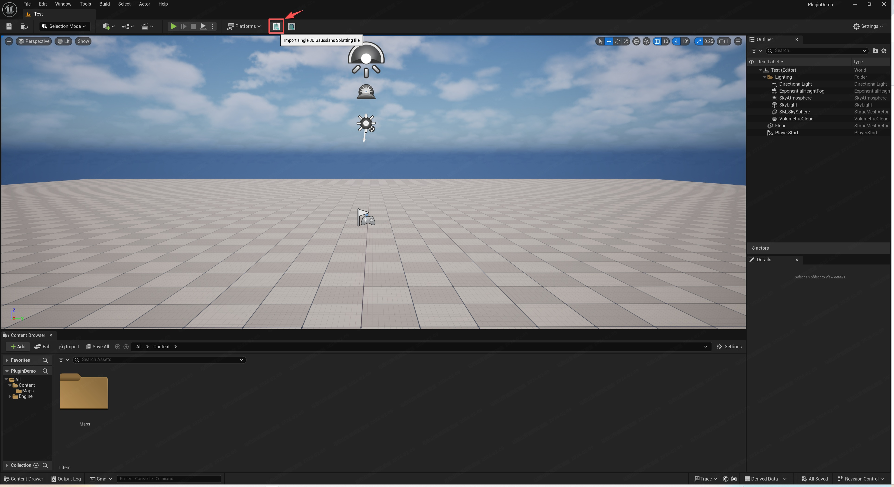
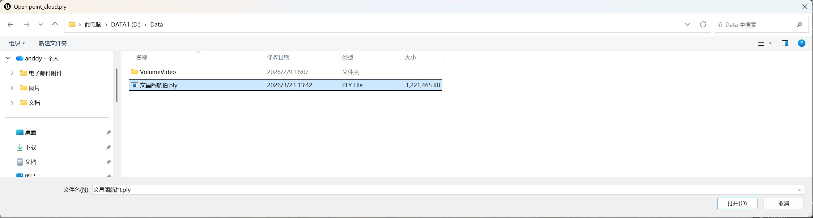
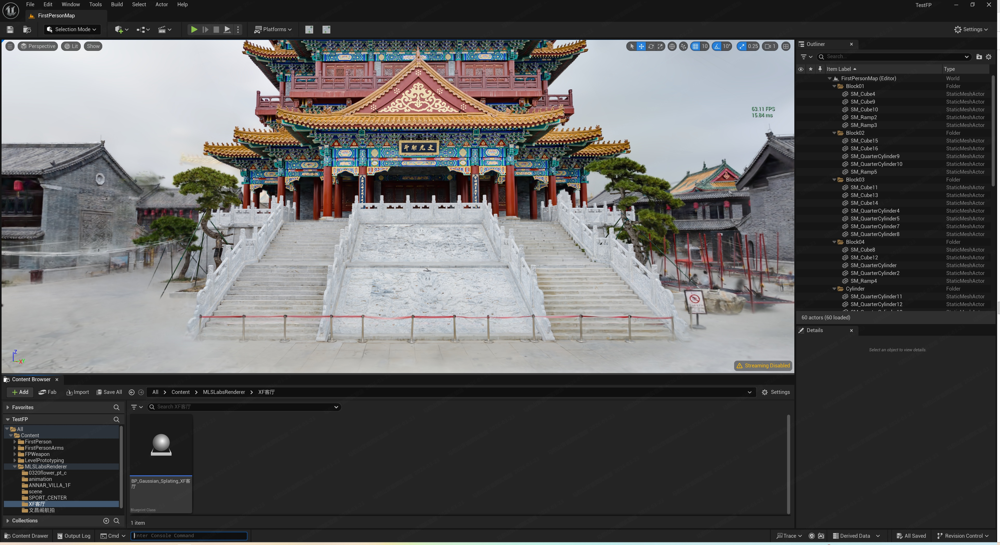

Phase 4 · Depends on P0–P3 Quality path
Productize
Installable Windows app: profiles, small installer, field guide, crash reload, UE 5.5 export, Open in Brush / LichtFeld / Postshot.

01Locked facts
- Small installer: app + venv bootstrap; models download after install. No HF token UI for the default manifest.
- Native Windows — reuse SmallInstaller ideas from V1, not WSL scripts.
- In-app gsplat remains default; external trainers are one-click folder open.
- Gaussian cap ~3M (1M hides 8K gain).
- Crash reload: port V1 “Reload path / Reload 3DGS from disk”.
- Unreal Engine 5.5 + MLSLabsRenderer (interim) for
splat.plyplayback — GitHub · Fab. MoGepointcloud.plyis not the Unreal asset. V1 Luma/NanoGS superseded.
| Profile | WAN | HiRes | Rails |
|---|---|---|---|
| Quality | 14B fp8 720p + LightX2V | 8K geometry | 4 |
| Fast | GGUF Q4 or Matrix-3D 5B | 8K optional | 2–4 |
| Scout | 5B or skip WAN | skip | 1 |
02Installer
D:\Votion3DGS · also test a path with spaces. Do not embed WAN 14B.03Open in… (Splat page dummy)
If the exe is missing: open the docs URL. Do not invent install flags. Gaussian cap ~3M.
Votion 3DGS
splatBrush: Directory → outputs/<scene> → Start. LichtFeld: ~3M primitive cap.

Unreal is outside this window: UE 5.5 + MLSLabsRenderer import splat.ply. MoGe pointcloud.ply is not the Unreal asset.
Log
Crash reload ports V1 Reload path / Reload 3DGS from disk.
Help
Continue / Retrain / Reload 3DGS from disk. Open in Brush: Directory → outputs/<scene> → Start. LichtFeld primitive cap ~3M. If the exe is missing, open the docs URL — do not invent install flags. Unreal: import splat.ply in UE 5.5 + MLSLabsRenderer.



04Unreal
Locked (interim): UE 5.5 + MLSLabsRenderer for real-time splat.ply playback.
- GitHub (Lite / source): mlslabs/MLSLabsGaussianSplattingRenderer-UE
- Fab: listing f91b57cc…
Install/enable the plugin, import splat.ply, place the Gaussian actor. MoGe pointcloud.ply is not the Unreal asset.



05Field guide & config
Rewrite V1 ui/field_guide.md for V2. Help is a bottom drawer (same chrome as Log), not a Home accordion and not a seventh page.


Votion 3DGS
idleGPU index, ComfyUI root, Brush/LichtFeld/Postshot paths, last scene, profile. No HF tokens.
Home · settings
Field guide is the Help drawer below — not an accordion in this viewport. Fast/Scout unlock in P4.
Log
Log is a drawer. Help is a matching drawer (locked 2026-08-31).
Help
2D Images (default) or 360 / text → 8K ERP → Compute geometry → rails → Generate → splat.ply. Ostris blocks 2D Generate until READY. h_fov 70. text keeps the trigger prefix. After 2D Images, prompt.txt = outpaint instruction + surroundings. WAN prompt must match the pano. Preview the mesh flight. Four rails usually enough. Do not skip 8K. Extra rails do not fix glass. Brush: Directory → outputs/<scene> → Start. Unreal: UE 5.5 + MLSLabsRenderer import splat.ply.
splat.ply in UE 5.5. Source: MLSLabsRendererD:\Votion3DGS\config.json: GPU index, ComfyUI root (default D:\ComfyUI_windows_portable_360), trainer exe paths, last scene, profile. No HF tokens.
06Acceptance
- Fresh Win11 + 3090: Setup → Download Quality models → Launch → 2D Images (or 360 Images / text) → 8K ERP → rails → Generate →
splat.plywithout WSL or ComfyUI running. 2D Images requires Ostris READY; until then 360 Images / text still complete the product loop. - Fast/Scout selectable; Scout skips HiRes.
- Kill mid-WAN: cancel works; scene reloadable.
- Open-in-Explorer works even if Brush is not installed.
- Installer is small relative to the model pack.
splat.plyimports and plays in UE 5.5 via MLSLabsRenderer (manual check).
07P5 is not this phase
5B as Fast default, SeedVR2 experiment only (video: slow, little gain vs 8K reproject), macOS, Matrix-3D opt reconstruction — see the Index appendix.